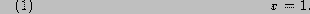

There are two types of variables in MATC: matrices and strings. Both are actually stored the same way in a double precision array, so that storing large arrays of strings is wasteful sizewise.
A variable is created by assigning value to it:

The above statement creates a matrix whose name is x.
The statement
creates a string variable k. That is, string variables are created with enclosed in ''''-marks.
Variables can be indexed by two row vectors. The statement
reverses the order of the first six elements of the first row of a variable called x. Indexing thus begins from zero.
Yet one example of creating a variable (or affecting its values) is
Variable x will be a matrix, if not previously created and bigger. It's elements are
1 2 3 4 1 2 3 4 1 2.The example shows that you don't have to give the row index if it's zero, and that when scanning for values for elements, the values end, they are repeated from the beginning.
Size of the variables are dynamic. If variable x is non-existent the statement
creates a new matrix whose size is and is zero except for the last element whose value is 1.
Another way of indexing a matrix is logical expression whose size is the same as the matrix which is being indexed. The statement
sets the values of matrix x which are less than 0.05 to the value 0.05.